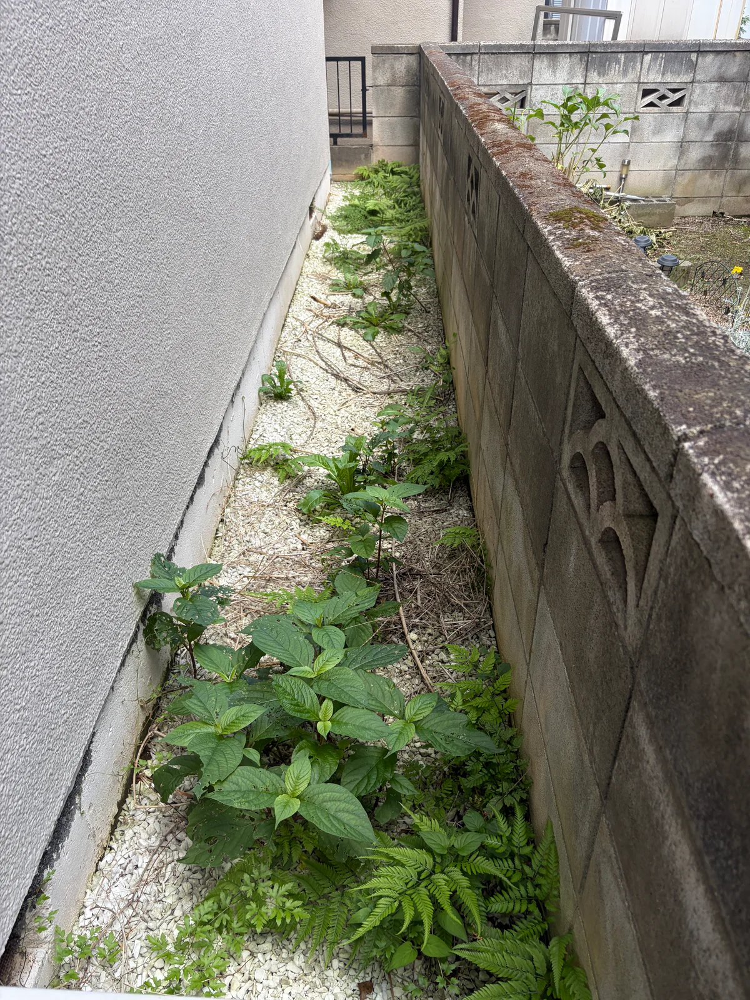

電球交換
高い場所など、ご自身では難しい交換作業。
工事後も安心して暮らしていただけるよう、点検はもちろん、住まいの中で生まれたちょっとしたお困りごとにも対応しています。
高い場所など、ご自身では難しい交換作業。
気になる雨樋の状態確認や清掃。
重くて動かしにくい家具の移動。
お庭や建物まわりの草むしり。
重い荷物を2階から下ろす作業。
住まいに関する、ちょっとしたご相談。
基本料金：30分以内 3,000円（税込）
延長は10分ごとに1,000円（税込）です。移動・準備・片付けの時間も基本料金に含まれます。
内容によっては対応できない場合があります。まずはご相談内容をお聞かせください。
以前に塗り替えをさせていただいたお客様からご相談を受け、草むしりと除草剤散布を行った事例です。
